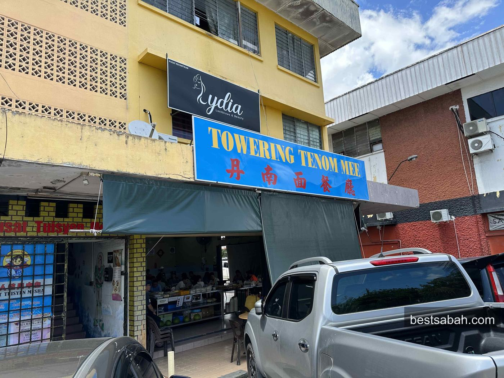
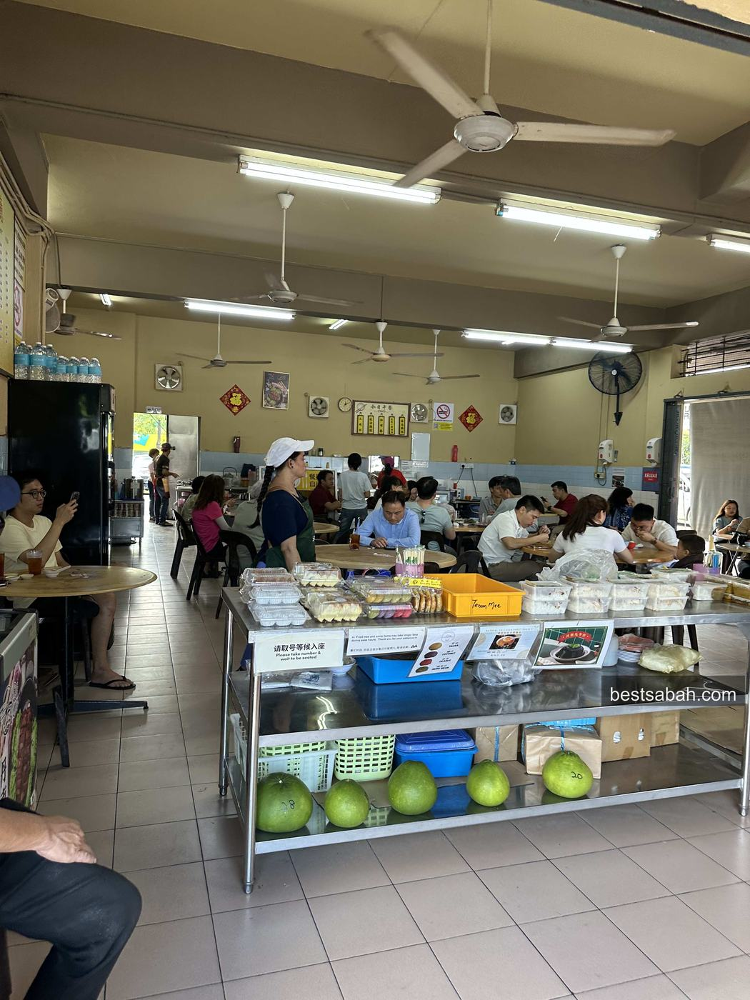
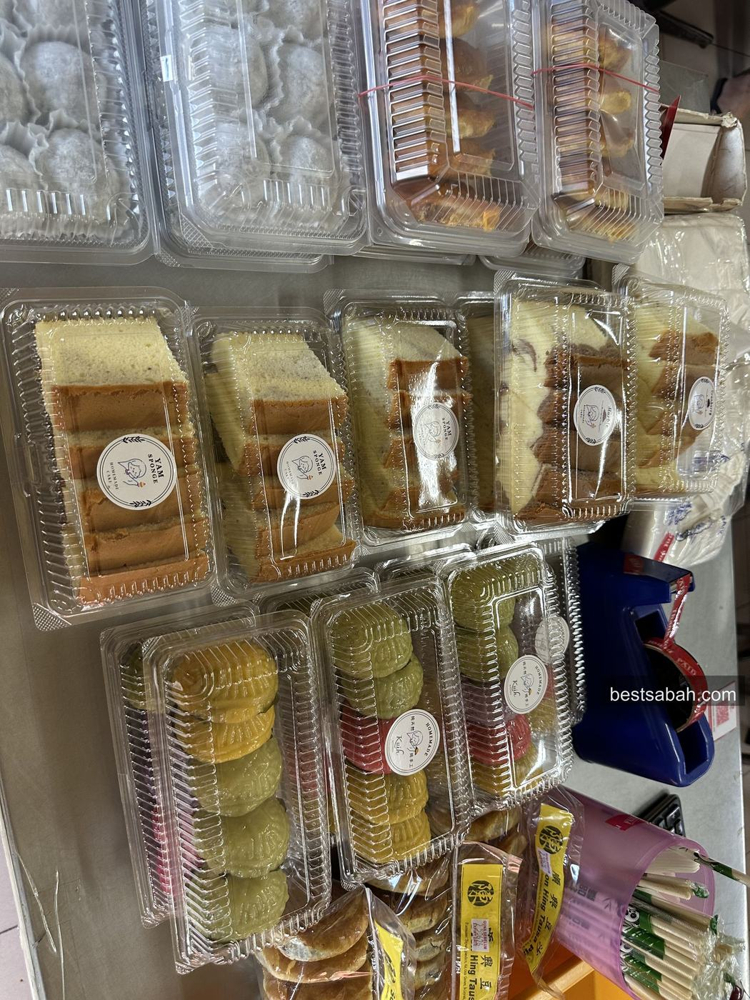
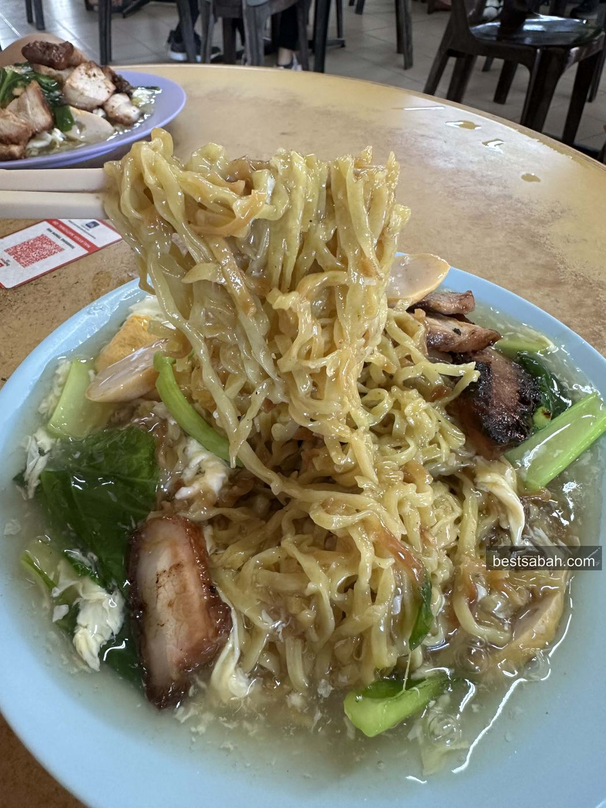
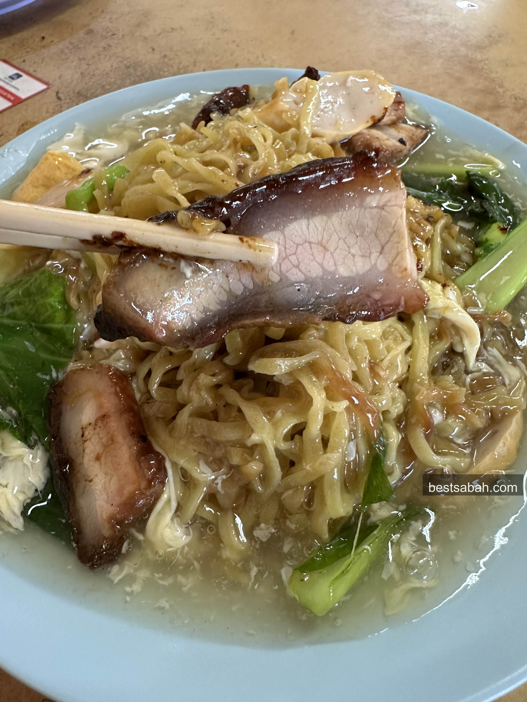
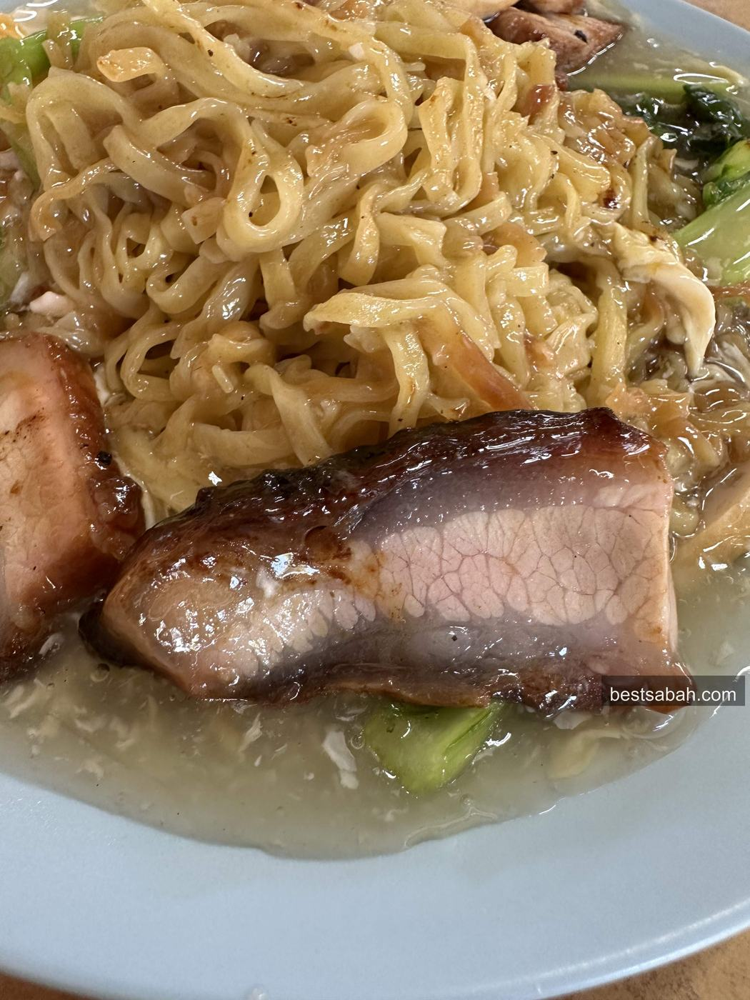

June 2026
Best Tenom Mee in Kota Kinabalu: Towering Tenom Mee
The good ol' tenom mee. There are a lot of variations of it around Sabah, but the best one is here at Towering. Fried noodles drenched in silky egg gravy, with char siew that is fatty, juicy and just right.

Towering Industry Centre, Jalan Penampang
So what is tenom mee? Tenom is a town in Sabah, and this noodle started from there. That is how it got the name.
There are a lot of versions of tenom mee around. But the best one, for me, it is here at Towering Tenom Mee.
The Place

The morning crowd
Walk in and the place is packed. Morning crowd, locals, families. They also sell some kuih and sweet treats on the side, so you can grab a few while you wait.

Kuih and sweet treats by the counter
They serve other stuff too. Chicken rice, char siew rice, the usual kopitiam plates. All decent. But the real main attraction is the tenom mee. That is what you come here for.
The Tenom Mee

Fried noodles drenched in silky egg gravy
It is fried noodles drenched in a silky, eggy sauce. The noodles are really good. You can taste the wok hei in there, that smoky char from a hot wok. Not every shop can get that right.

Springy noodles, proper wok hei
In Sabah we are known for our noodles. Beaufort mee, tenom mee, tamparuli mee. Three different towns, three different styles. Out of all three, tenom mee is my favourite. And it has to be from this shop.
That Char Siew

Fatty, juicy char siew
Just look at that char siew man. Fatty, juicy and extremely delicious. The fat melts and soaks into the gravy. This is the part that makes the whole plate.

Getting There
I will be honest, this place is quite hidden from tourists. It is pretty far from the city centre, out in the Towering area off Jalan Penampang. Not somewhere you stumble into by accident.
But if you are visiting KK, I really recommend making the trip. A plate is RM12, the portion is big, and it is delicious. Worth it.
Address: Jalan Penampang, Towering Industry Centre, 88200 Kota Kinabalu, Sabah.
Hours: 6:30am to 2:00pm. Closed Monday. Go in the morning, the noodles can run out and the queue builds up fast on weekends.
Coming by Grab? Search "Towering Tenom Mee" and it comes up fine.
This place is not touristy at all. But it is always packed with locals. We love this lah, so I hope you give it a try when you are in KK.
Cheap, big portion, and the best tenom mee in town. Hard to beat.
Still building your KK food list? Yii Siang ngiu chap in Inanam is another local noodle spot worth the drive. Same no-fuss, locals-only vibe.